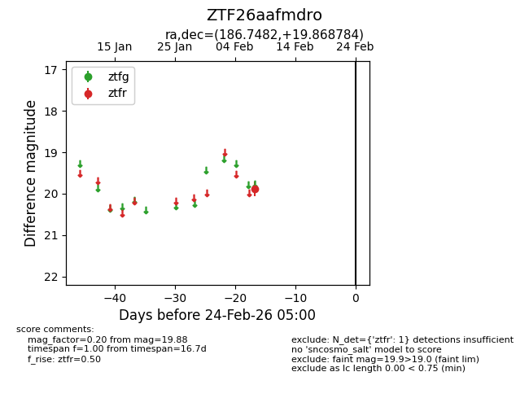
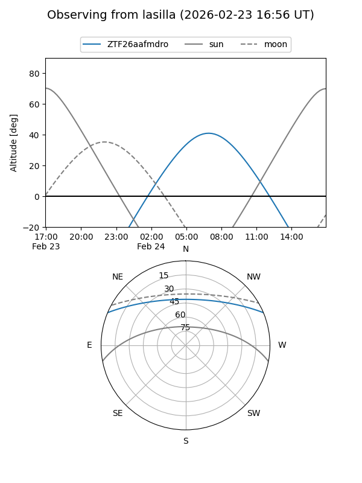
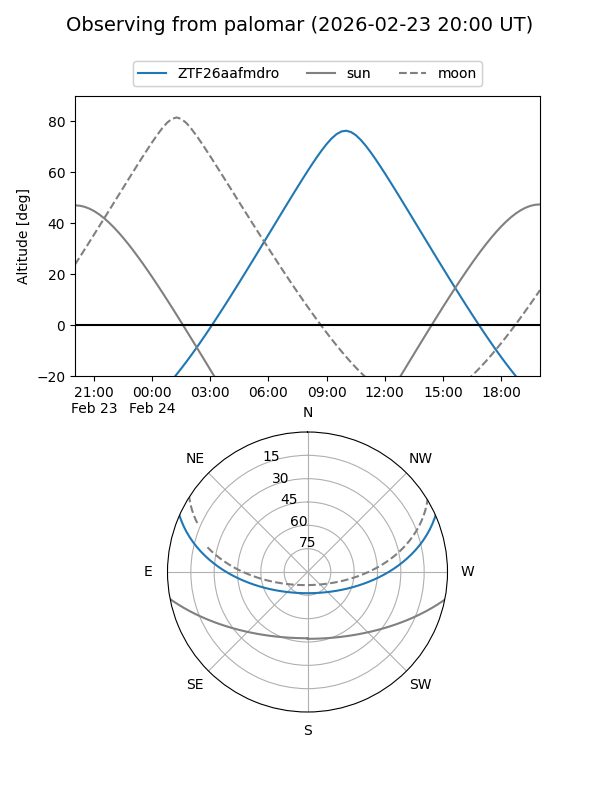

ZTF26aafmdro
Target ZTF26aafmdro at 2026-02-24 09:08
Aliases and brokers:
FINK: link
Lasair: link
ALeRCE: link
alt names
ZTF26aafmdro (ztf,fink_ztf)
Coordinates:
equatorial (ra, dec) = 186.7482,+19.86878
equatorial (HMS+DMS) = 12:26:59.56,+19:52:07.62
galactic (l, b) = (263.9963,+80.83269)
Flags:
Photometry:
last ztfr=19.88
1 ztfr detections
Lightcurve

Visibility


Additional plots